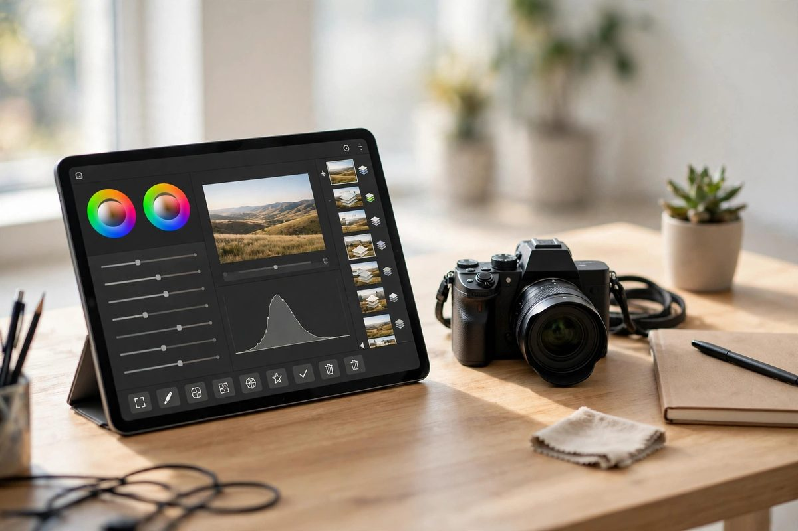

Lightroom Premium Features Explained

What Premium Actually Adds
Lightroom Mobile is free to download and includes a strong set of editing tools at no cost: exposure, color, cropping, sharpening and presets all work without paying anything. The premium subscription, sold as part of Adobe's Creative Cloud photography plans, unlocks a second layer of tools aimed at people who edit often or professionally. Premium adds selective editing with masks, the healing brush for removing objects, batch editing, geometry correction, cloud sync across devices, and the ability to edit RAW files from a camera, along with a larger library of presets and the full set of curves controls.
Masking: Edit One Part of the Photo
Masking is the single most powerful premium feature, and it is the reason many photographers upgrade. Instead of changing the whole image, a mask lets you select one area and adjust only that area. Lightroom offers several ways to build a mask: a brush you paint with your finger, a linear gradient for skies, a radial gradient for a subject, and automatic selections for the subject or the sky, which use machine learning to find edges for you. A typical use is brightening a person's face in a backlit photo without blowing out the sky, or darkening a bright sky while leaving the landscape untouched. If you regularly fight the problem of one part of a photo needing a different edit from the rest, masking alone can justify the subscription; if you mostly apply a preset and export, it will sit unused.
Healing Brush and Geometry Tools
The healing brush removes unwanted things from a photo: a spot on a lens, a stray piece of litter, a pimple, a power line crossing the sky. You paint over the object, and Lightroom fills the area with texture sampled from nearby, blending the edges so the repair is invisible on simple backgrounds. Used sparingly, it is the difference between a good photo and a clean one. The geometry tools, listed under the Crop panel, fix perspective: they straighten converging verticals in photos of buildings, correct a tilted horizon, and remove the distortion of a wide-angle lens. The Auto option analyses the photo and applies a correction, while the manual sliders for vertical, horizontal, rotation and aspect let you fine-tune it. Both features are about precision rather than style, and they reward careful, zoomed-in work.
Batch Editing and Presets
Batch editing is a time saver for anyone who edits many similar photos, such as a wedding, a trip or a product shoot. In premium, you can copy the edits from one finished photo and paste them onto many others at once, including masks and local adjustments, and Lightroom will apply them in seconds. This works best when the photos share the same lighting, because a preset tuned for golden hour will look wrong on a cloudy photo. Premium also unlocks the full preset library, including presets that use the paid tools, and lets you create your own presets from any edit, including masked adjustments, and share them across devices. The honest test is volume: count how many photos you edit in a typical month, and if the number is small, the free version plus a little patience does the same job.
Cloud Sync, RAW and the Rest
Premium includes cloud storage and sync, which means your photos and edits follow you between your phone, tablet and computer, and your originals are backed up on Adobe's servers. Premium also unlocks editing of RAW files from a dedicated camera, not just from a phone, with fuller access to the curves tool and color grading panels that give finer control over tones. The free version can open some RAW files, but the paid tools give you the full range of adjustments. None of these extras will make a bad photo good, but together they make a professional workflow smoother, and that is the real product: speed, consistency and the ability to work across devices without friction.
Tip: Try the free version for a month first and note which paid tools you actually reach for. If you never miss masking, healing or batch editing, you do not need the subscription yet.
Who Needs Premium and Who Does Not
Premium is worth it for photographers who edit in volume or for clients: wedding and event photographers, real estate shooters, product photographers and anyone who edits on both a phone and a computer. For them, masking, batch editing and cloud sync pay for themselves quickly in time saved. It is not worth it for casual users who take a few photos a week, apply a preset and share them, because the free tools already cover that workflow completely. Students and beginners should start free and upgrade only when they hit a specific wall, such as needing to brighten a face without touching the sky, and can name the feature that would solve it. One warning: do not look for unofficial modified versions of the app that promise premium features for free. Modified apps are a security risk, they can carry malware, steal your photos or account details, and they are often unstable or banned.
Frequently Asked Questions
Is the free version of Lightroom enough for most people?
Yes. The free version covers exposure, color, crop, sharpening and presets, which is enough for everyday photos. Premium adds control and speed, not a different look.
Can I cancel premium at any time?
Yes, you can cancel through your app store or Adobe account, and your photos and edits remain accessible in the free version afterwards, though premium-only tools stop working on new edits.
Do premium presets work without a subscription?
Some presets use premium-only tools such as masking, so they will not apply fully in the free version. Presets built only from basic adjustments work fine without a subscription.
Download Lightroom — Official App
Get the official Adobe Lightroom app free from your app store. Avoid modified APK files from other websites — they can contain malware and are not supported by Adobe.